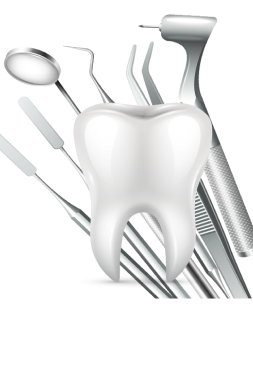
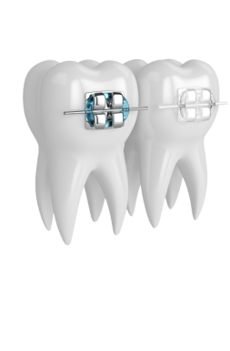
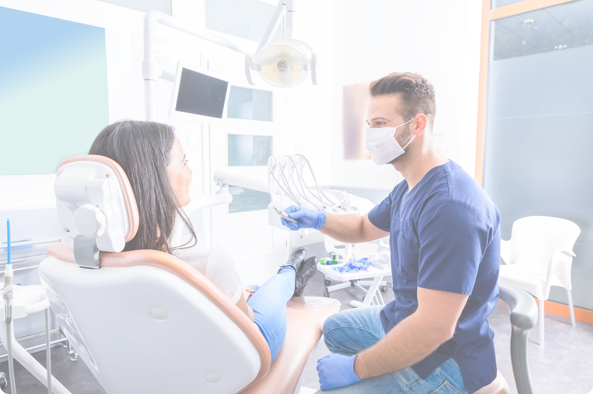

Лечение и протезирование зубов по Европейским стандартам
Предоставим 2-3 плана качественного лечения под ваш бюджет
Запишитесь на бесплатную первичную консультацию - диагностику зубов
Работаем с 2011 года
Многолетний опыт работы - залог качественного сервиса

Опытные врачи
Огромный опыт персонала и слаженность работы

Уникальный подход
Применяем в своей работе современные технологии
Бесплатная консультация врача
На бесплатной консультации врач клиники проведет диагностику всех зубов:
Полный осмотр и диагностика полости рта
При необходимости сделаем дополнительный снимок зубов, у нас в клинике
Составит 2-3 плана лечения на выбор
Вы сможете выбрать подходящий план лечения, исходя из бюджета
При необходимости проведем проф. гигиену
Чистка зубов в 4 этапа
Акции
Для подписчиков группы VK стоматологической клиники "Семейный доктор" действуют акции и специальные предложения


Услуги
Наша клиника предоставляет широкий спектр услуг, выберите подходящую вам и запишитесь на бесплатную консультацию
Хирургия
Удаление зуба является одной из самых распространенных операций в стоматологической практике.
- Удаление зубов любой сложности


 спросить в мессенджере
спросить в мессенджереТерапия
Лечение напрямую зависит от стадии заболевания. Мы подбираем наиболее эффективные методы диагностики и терапии.
- Кариозных и некариозных поражений
- Пульпитов и периодонтитов
- Художественная реставрация зубов

спросить в мессенджереОртопедия
Помогает решить проблемы, связанные с аномалиями, приобретенными дефектами, повреждениями и деформациями органов жевательно-речевого аппарата.
- Коронки и мосты керамические
- Коронки и мосты циркониевые
- Съёмное протезирование (протезы, бюгеля, мягкие протезы)
- Установка виниров
 спросить в мессенджере
спросить в мессенджереИмплантация
Это операция по установке в челюстную ткань специального стоматологического штифта, который будет играть роль корня.
- Установка имплантов OSSTEM implant
- Наращивание кости (все виды аугментации) OSSTEM implant
- Имплантация зубов по системе All ON4-All ON6
 спросить в мессенджере
спросить в мессенджереОртодонтия
Поможет сделать вашу улыбку красивой и исправит прикус. Исправляет аномалии челюстей, положения челюстей в черепе, формы, величины, соотношения зубных дуг.
- Установка брекет систем
- Цифровое ортодонтическое лечение прозрачными каппами
- Полная диагностика и лечение взрослых и детей

спросить в мессенджереОтбеливание зубов
Стоматологическая процедура изменения оттенка зубной эмали. Отбеливание зубов относится к области косметической стоматологии.
- Система Opalescence Boost
 спросить в мессенджере
спросить в мессенджере- Максимальная чистка в труднодоступных местах от камня и налета
- Применение AIR FLOW не доставляет дискомфорта и боли
- Такая чистка помогает убрать неприятный запах изо рта
- Осветляет зубы на 2-3 тона
- Очищает протезы брекеты и другие ортодонтические конструкции
- Убирает пятна от кофе, чая, табака и красного вина
- Удаляет налет курильщика
- Снижается развитие кариозного процесса
- Все этапы безболезнены и атравматичны
спросить в мессенджере
1
Ультразвуковым аппаратом производится максимальная чистка в труднодоступных местах от поддесневого и наддесневого камня и налета.
2
Применение AIR FLOW не доставляет дискомфорта и боли, очищая межзубные отложения.
3
Полировка зубов при помощи специальных паст и щеточек. Такая чистка устраняет все неровности скопившихся отложений, освежает и убирает неприятный запах.
4
Покрытие зубов ременилизирующим гелем. Снимает чувствительность, предотвращает развитие кариеса.
спросить в мессенджереВрачи
В нашей клинике работают высококлассные специалисты с большим опытом работы. Выберите подходящего врача и запишитесь на консультацию.
Саидов Шамсулло Нарзуллоевич
Врач-стоматолог Ведущий специалист

Анисимов Дмитрий Владимирович
Врач-стоматолог

Варданян Давид Араевич
Врач-стоматолог
Соха Анастасия Юрьевна
Врач-стоматолог

Иванова Оксана Григорьевна
Врач-стоматолог

Синельщикова Елена Дмитриевна
Врач-стоматолог

Саидов Шамсулло Нарзуллоевич
Врач-стоматолог
Ведущий специалистОпыт работы более 25 лет
Действующие сертификаты: стоматология ортопедическая; стоматология хирургическая Все виды высококачественного протезирования: съемные, несъемные, безметалловые конструкции, цирконий, проте- зирование на имплантах, драгметаллах, вкладки, виниры, гнатология и хирургия

Анисимов Дмитрий Владимирович
Врач-стоматолог
Опыт работы более 5 лет
Действующие сертификаты: стоматология общей практики; стоматология хирургическая Направленность: имплантация, пародонтология, удаление зубов любой сложности

Варданян Давид Араевич
Врач-стоматолог
Опыт работы более 5 лет
Действующие сертификаты: стоматология общей практики; стоматология хирургическая Направленность: протезирование зубов, хирургическое удаление, терапевтическое лечение и отбеливание

Соха Анастасия Юрьевна
Врач-стоматолог
Опыт работы более 10 лет
Действующие сертификаты: стоматология общей практики; стоматология терапевтическая; стоматология ортодонтическая Направленность: терапевтическое лечение, эстетическая реставрация зубов и исправление прикуса любой сложности

Иванова Оксана Григорьевна
Врач-стоматолог
Опыт работы более 20 лет
Действующие сертификаты: стоматология общей практики; стоматология ортопедическая Направленность: терапевтическое лечение, все виды протезирования, хирургическое удаление зубов

Синельщикова Елена Дмитриевна
Врач-стоматолог
Опыт работы более 5 лет
Действующие сертификаты: стоматология общей практики; стоматология хирургическая Направленность: терапевтическое лечение, эстетическая реставрация, хирургическое удаление зубов , профессиональная гигиена и отбеливание

 спросить в мессенджере
спросить в мессенджереОтзывы
Нашу клинику за годы работы посетили сотни пациентов. Всегда рады видеть довольных клиентов. Ваша улыбка - это наша работа!

Юрьева Оксана
Клиника чистая, уютная. Персонал улыбчивый, вежливый, услужливый. Всегда объяснят если что не понятно несколько раз, с таким персоналом приятно общаться. Мне уделили довольно много времени, всё подробно рассказали и проконсультировали.
12.02.2020

Викина Вика
Хочу сказать огромное СПАСИБО врачам и персоналу Стоматологии Семейный Доктор. Я ваш вечный клиент и главное эксклюзивный. Очень рада что мы познакомились. СПАСИБО!
12.02.2020
Юрьева Оксана
Клиника чистая, уютная. Персонал улыбчивый, вежливый, услужливый. Всегда объяснят если что не понятно несколько раз, с таким персоналом приятно общаться. Мне уделили довольно много времени, всё подробно рассказали и проконсультировали.
12.02.2020
Викина Вика
Хочу сказать огромное СПАСИБО врачам и персоналу Стоматологии Семейный Доктор. Я ваш вечный клиент и главное эксклюзивный. Очень рада что мы познакомились. СПАСИБО!
12.02.2020
Лицензии и награды
Деятельность клиники сертифицирована, мы имеем все необходимые лицензии и разрешающие документы.